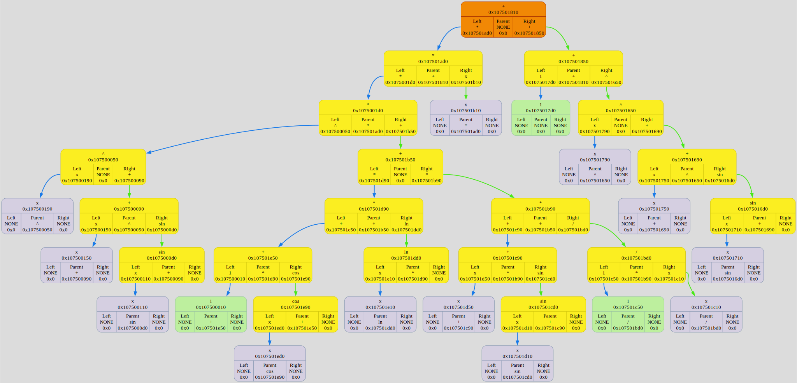

Colors meanings:
Binary Tree[0x16fdd31c0] born at "/Users/anatolij/Documents/GitHub/Differentiator/source/main.cpp": 7, name 'tree'
left subtree node
⮑ left subtree edge
right subtree node
⮑ right subtree edge
root node
⮑ unknown what edge
new node
unknown what node
DUMP #1: function TreeCtor was called from /Users/anatolij/Documents/GitHub/Differentiator/source/main.cpp: 8

DUMP #2: function TreeDtor was called from /Users/anatolij/Documents/GitHub/Differentiator/source/main.cpp: 12
